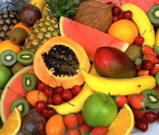
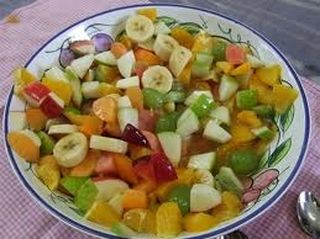
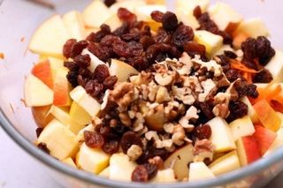

Шаг 1: чистим фрукты.

Тщательно промываем каждый фрукт и обдаем кипятком. После этого просушиваем полотенцем и беремся за нож. Проще всего из набора цитрусовых чистится помело – делаем надрез в трех местах и снимаем с него шкуру. За счет того, что его кожура мягче и «пористей», чем у апельсина и грейпфрута, она и легче снимается. Как правило, под ней остается белая «подшкурка» - счищаем ножом. Нам нужна половина. Далее – апельсины и грейпфрут. С ними я обычно долго вожусь. Они и сока дать могут во время чистки… С бананов снимаем кожуру, беремся за дыню. Тут варианта два – либо мы ее чистим, грубо говоря, как картошку, режем пополам, вычищаем; либо режем, вычищаем и потом, в процессе нарезки отделяем кожуру отдельно. По-моему, проще сразу почистить.
Шаг 2: нарезаем фрукты.

В салатницу нарезаем: дыню кубиками 3х3 см; банан делим на четверти вдоль, а затем каждую четвертинку нарезаем слоем в сантиметр-полтора; помело нарезаем так же кубиками, только поменьше, примерно 2х2; остается грейпфрут и апельсины. Сначала режем грейпфрут – так как фрукт довольно горький, его лучше резать не мелко. Делим на дольки и пополам, либо на три, зависит от размера дольки. С апельсином мы поступим милосерднее – резать его не будут, но… мы снимем кожуру с долек и, если возможно, выковыряем косточки.
Шаг 3: заправляем салат.

Грецкие орехи перемалываем в блендере, пересыпаем сахарной пудрой и вмешиваем в салат. Капаем пару капель оливкового масла и тщательно, но аккуратно перемешиваем.